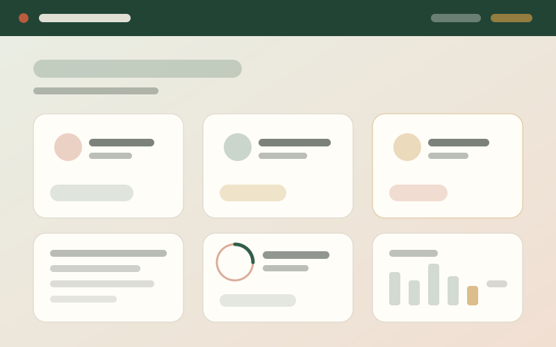
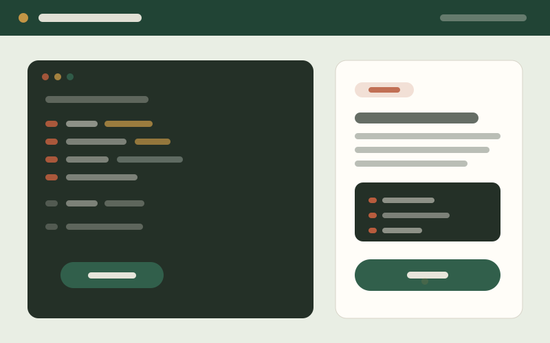

UX/UI Design · Front-End Development
Interfaces that are intuitive for people and built to last.
I'm Kathryn Linnenkamp, a computer science graduate working at the intersection of design and engineering. I design interfaces, prototype them, and build them — with accessibility and clarity treated as requirements rather than polish.
Selected work
Recent design projects
Product, web, and game interface work — each with the problem, the design decisions, and the outcome.

Game Archive
A browser game collection rebuilt around one browse-and-play loop.
Read case study →
QuackTheCode
An educational game where the failure state is the most designed screen.
Read case study →
Ghost House
A Unity game where the HUD only reveals what the player has earned.
Read case study →